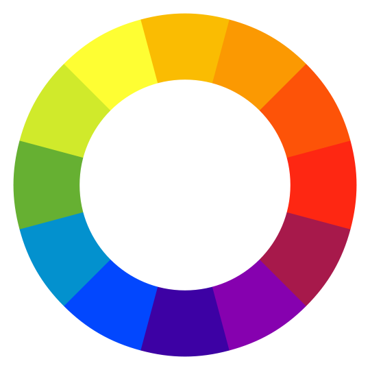

Objectives for Today
By the end of today, you will:
- Describe various color systems we use to talk about color on the web.
- Understand the principles of organizing schemes of color.
- Identify the principles of layout and pattern scanning among typical users.
- Interpret how visual patterns inform the use of empty space.
Color
Earlier this semester, we introduced web colors.
 With web colors, we divided our color into red, green, and blue components, which serve as our "primary colors"
However, these are not the only colors we could pick. In traditional
painting, we would instead use red, yellow, and blue components. In printing, we typically use cyan, magenta,
and yellow (which are the secondary colors of our original RGB palette!).
With web colors, we divided our color into red, green, and blue components, which serve as our "primary colors"
However, these are not the only colors we could pick. In traditional
painting, we would instead use red, yellow, and blue components. In printing, we typically use cyan, magenta,
and yellow (which are the secondary colors of our original RGB palette!).
It turns out, every combination of colors has an accessible region of the full visible spectrum. No individual
set of primaries can be mixed to give you every possible color, and different sets are better suited to different
applications of color ('subtractive'/reflective colors, or 'additive'/emissive colors):
However, even in this RGB space, there are many choices for how we choose to represent color. Mixing quantities
of light is a close approximation to the act of mixing pigments as we would do in traditional art. However,
what if we instead represented color as a radial coordinate system:

In this system, pure red is represented as 0 degrees on the circle, and rotating through the circle first modulates
the proportion of red and green, then green and blue, and finally blue and red.
When we represent color using a color wheel, we are focusing on a single 'dimension' of color, and can interact with
colors in a way that focuses purely on their hue. As a result, it's easier to theorize about what colors do or don't
interact nicely with each other, in a way that generalizes nicely to a broader spectrum. However, as a drawback, we
remove a huge section of our colorspace.
Specifically, lightness/darkness and saturation. To get something that's a closer approximation, we have to add
back these two other dimensions to our polar coordinate:

When we do this, we arrive at what's called Munsell color (also known as hue-saturation-lightness.) HSL color
is the most sophisticated color system we can use to talk about color theory, though it is far less intuitive than
RGB. For now, we will stick with the simpler color wheel, and bring in saturation and lightness when appropriate.
Color Schemes
Now that we've learned about the mathematics of color, it is time to discuss what makes colors work together.
In general, we can divide the color wheel into two 'temperatures' based on the qualitative effect those colors
tend to have on viewers:
Identifying psychological associations with a color (for instance, "green" with freshness, or "warm" colors with
excitement, red with passion or danger...) can help you identify the "key" hues to use in a color scheme like the
several that we discuss below:
Monochromatic Schemes
The simplest color schemes we can create are what are called 'monochromatic' schemes. A monochromatic scheme is
a scheme that is built around one single hue; by taking a specific hue and adjusting the lightness higher, we
create what is called a 'tint' of that color. Conversely, if we take that same hue and adjust the lightness lower,
we create a 'shade' of that color:
A palette full of tints and shades of the same hue creates a sense of homogeneity in our design, and provides a
strong sense of cohesiveness to our site. However, monochromatic schemes also risk monotony. To keep them fresh,
it can help to take your 'home base' value, and adjust not just lightness, but also saturation to get shades and
tints of hue-tinged grey:
Analogous Schemes
Branching off from monochromatic schemes, the next safest color scheme are analogous schemes. Rather than playing
with saturation and lightness, these schemes make minor adjustments to hue (generally within +/- 30 degrees of
their 'home base'):
Analogous color schemes keep the 'unified' look of monochromatic color, while injecting a bit of extra variety.
When using an analogous scheme, it is important to give greatest prominence the 'home base' color, using the nearby
shades as accent. Likewise, you should minimize modulation of saturation and lightness (on the analogs), or
otherwise limit yourself to a few analogs to avoid too much visual noise.
Complementary Schemes
The next category of color palettes are those which emphasize 'opposing' colors on the screen. Opposing colors
(those rotated 180 degrees from each other in hue) tend to be garish when placed near each other at similar intensity:
However, by modulating the saturation and lightness so that one color is dominant and its 'opposing' color is used
sparingly for emphasis, we create a tool that draws the eye in (perfect for focusing attention to an important
element or interactive component:)
We can become even more sophisticated by selecting a palette that 'offsets' the complement by 30 degrees to either
side of the complement. This technique is called the 'split complement' palette. By adjusting just a tiny bit
away from directly opposing colors we eliminate some of the visceral punch of opposing colors, which allows us to
become more bold with our use of contrasting colors to create a hot/cold dichotomy (perfect for sites that want to
emphasize different modes of content or main areas):
Triadic/Quaternary Schemes
If we instead stretch our palette to equidistant points on the color wheel, we end up with a triadic color
scheme. Triadic colors tend to appear balanced and varied, and work best again when selecting shades or tints at
similar intensity levels:
There are even some web toys that will help you pick out
color schemes using these rules we discussed above! Remember: color palettes are tools for accentuation, not color
washing the entire screen -- The best sites are often built around dark grey or white, using the entire
rest of the palette only for emphasis in headings, graphics, and other small sections.
Placement
Scanning Patterns
When a user encounters your site, their first reaction is typically not to read the full site from top to bottom.
Instead, they'll skim sections and get a feel for the overall presentation of your site. What this means is that
not all positions on the site are of equal value:
What is pictured here is a heatmap of the time users' eyes spent on each different part of the website.As we can
see, content consumption tends to break off into horizontal and vertical bars that approximate the layout of the
page, but rarely consume the full width of the text. This is known as the "F-scanning pattern".
Note: F-scanning is not the only
scanning pattern. However, it is the easiest for us to design around.
When we are designing content for the web, it is important to take advantage of this common pattern. As such, we
can use a few tricks to circumvent the phenomenon of skipped text:
- Make sure your text is broken up into many sections -- F-scanning tends to cause users to jump sections. By
increasing the number of sections, we can control what words appear first even as our text reflows to different screen
sizes, and create new breaks that force an eye jump.
- Make use of styling to group related content/sections, and place them near each other on the site.
- Leverage formatting and emphasis for important terms. Some text components like hyperlinks are expected to visually
'pop out', which gives us an in-medium way to signal important terms that catch the user's eye.
The 'Fold'
In addition, we can take cues from traditional media. In newsprint, it was common for the first third of the first
page of the newspaper to contain an eye-catching graphic with a large, bold title.
When the newspaper was folded up in the display case, this first content was the only thing visible to potential buyers.
That first window into the newspaper was forced to do all the marketing for someone who would be making a purchasing
decision by the 'cover'.
When we're designing a website, our
'fold' is the window that is initially visible when the user first loads the
page. Since we have a variety of form factors to design for, the rule of thumb is that the 'fold' of our website is
approximately the first 600 pixels of height, and 1024 pixels across. In this space we should include:
- Any visual design elements that are designed to draw the user in/catch the eye (graphics, videos...)
- The main heading or purpose of the page, clearly emphasized.
- Simplified navigation buttons or a sectional navigation bar.
Implied Boundaries
Finally, I want to leave you with one last principle of design: the rule of implication. When designing a site,
often the best thing to do is reduce visual load by leaving boundaries, groupings, and hierarchy implied by design
rather than explicitly called out.
Take a look at the image below:
Even without any explicit borders, your eye easily divides this image into four groups: one large one, and three small
subsections of another. When we are designing a
site, we want to make sure our user is spending the maximum amount of time possible viewing the content, rather
than the design. There is an entire gestalt theory
that studies visually implied grouping that I highly encourage you to read. For today, we will talk about one
specific technique you can use in your sites.
Axes of Symmetry
When designing a site, if we want to create a sense of order or structure to our content, we should use the principle of axes. To create an axis in the design,
we ensure repeating elements of serial content are vertically or horizontally aligned. The lines we create do
not even have to be visible -- they can be implied by the use of whitespace:
By reinforcing this structure, we create an expectation in how the user will interact with the site. We can then
subvert this pattern to break up the rhythm and imply a sense of hierarchy.